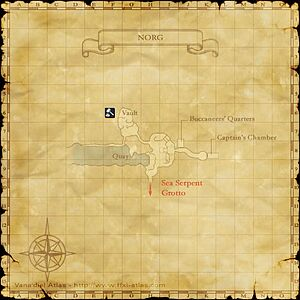

Level 75 reference · Zenith rules
|


Walkthrough
- Trade 10 Rusty Subligar to Heiji, who is situated at the top of the ramp, just to the left of the large staircase in the main room.
- He will give you the scroll of Kurayami: Ichi
Game Description
- Ten rusty subligaria are needed for the training of young ninjas. Heiji will accept them one at a time.
Adapted from Eden Wiki: Like a Shining Subligar · Contributors and history · CC BY-SA 4.0. Revision 5219. Layout, links and optional background text adapted for Zenith.